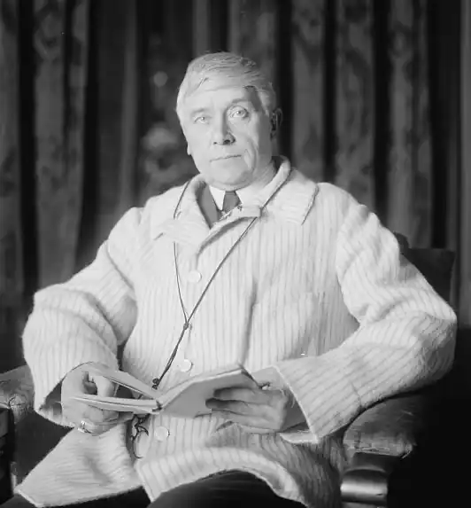

МОРІС МЕТЕРЛІНК
(1862-1949)
Бельгійський поет і драматург Моріс Метерлінк, лауреат Нобелівської премії (1912), залишив яскравий слід в історії європейської драматургії. Метерлінк, подібно до Ібсена чи Стріндберга, був справжнім першовідкривачем у царині "нової драми", визначним теоретиком і драматургом європейського символістського театру. М. Метерлінк народився і провів дитинство в бельгійському місті Генті. Згодом, за наполяганням батька, юнак їде до Парижа — вивчати право, і там захоплюється творчістю поетів-символістів. У 1,889 році Метерлінк випускає у світ збірку віршів "Теплиці" і першу свою п'єсу "Принцеса Мален". Рання драматургія Метерлінка базувалася на естетичній теорії, яку він виклав у книзі "Скарби смиренних" (1896), зокрема в есе "Трагічне щоденного життя". У ньому письменник виклав основні принципи символістської "нової драми", а також дав назву своєму театру — "театр статичний", або "театр мовчання". Полемізуючи з традиційним поглядом на природу трагічного як на вічний розлад між пристрастю й обов'язком, Метерлінк вбачає сутність трагічного в "трагізмі повсякденності", в "самому факті життя". Завдання драматурга — зображувати не виняткові події, де все вирішує випадок, а душевне життя людини, яка прагне до вищих сфер буття. Для спілкування з "вищою духовною сферою", як для істинного спілкування людей між собою, слід оволодіти мистецтвом мовчання, навчитися вступати в "нечутний", внутрішній діалог один із одним (принцип "другого діалогу" в "театрі мовчання"). Як і для інших творців "нової драми", внутрішня дія, яка розкриває стан душі, для Метерлінка важливіша за дію зовнішню, яка фіксує поведінку та вчинки людини. У своїх п'єсах-казках Метерлінк говорить про явища буденності, про те, що сам він постійно називав трагізмом повсякденного життя. Матеріальні сили набувають у нього духовного змісту, перетворюються на фатум, а люди — на ляльок, маріонеток. Вони говорять нечіткою мовою, дерев'яніють у вимушеній нерухомості. Дія відбувається в умовному місці: якийсь замок, ліс, острів, берег моря, вулиця тощо. Немає й ознак часу, умовними є декорації, відсутні деталі побуту; можна сказати, що немає у драмі й самої дії. Персонажі стають уособленням настроїв і почуттів, символами страху, сподівань, передчуттів, безнадії, зневіри. Людина зробить порух — і це означає, що невидима рука смикнула маріонетку за ниточку. На перший план виступають поняття підтексту і настрою. Г. Ібсен вже використовував ці елементи нової драматургічної техніки, але в нього вони стоять поряд із старими прийомами — відкритим діалогом, сповідальними монологами, гострими сюжетними перипетіями. Нові прийоми драматургічного письма Метерлінк відокремив, надавши їм абсолютного значення. У Ібсена діалог болісно роздвоєний — люди в нього думають одне, а говорити повинні інше. Вони приховують від співрозмовника свої справжні почуття і наміри. Для Ібсена підтекст — ознака вимушеної нещирості людських стосунків. На словах герої репрезентують себе людьми благопристойними та щасливими; в підтексті ж прихована ганебна таємниця їхнього існування. У Метерлінка через підтекст, через настрій ми одержуємо доступ до істинного, духовно змістовного життя людини, оскільки воно спливає поза словами і всупереч їм. "Принцеса Мален" — перше значне досягнення символічного театру Метерлінка. Незабаром після цієї драми були написані дві одноактні п'єси "Непрошена" і "Сліпі" (1890), які утвердили славу драматурга нового напряму. Дія в них зведена до процесу очікування. Не випадково критики назвали їх "драмами очікування" — настільки точно вони відповідали програмним вимогам теорії "статичного театру". В обох п'єсах "непрошеною гостею" стає Смерть — одна з трансформацій невідворотної долі в театрі Метерлінка. Мотив пасивного, "сліпого" очікування, де "сліпота" виявляється символом самосвідомості людства, звучить у п'єсі "Сліпі", яка викликає віддалені асоціації із відомою картиною П. Брейгеля. Кілька сліпих старих чоловіків і жінок, утворивши півколо, сидять у лісі й чекають свого проводиря, старого напівсліпого священика, який вивів їх із притулку на прогулянку і пішов, щоб принести хліба й води. Він довго не повертається, і вони не знають, що з ним сталося. До сліпих прибігає пес із притулку, який приводить їх до місця, де, застигнувши нерухомо, сидить мертвий священик. Чути шум кроків. Дитина однієї із сліпих жінок, яка спала в неї на колінах, прокидається з плачем. Хлопчика підіймають над головами, щоб він побачив, чиї це кроки чути поряд. Голос дитини зривається на крик. Сліпі просять про милосердя, але їм ніхто не відповідає. У "Сліпих", як і в "Непрошеній", висловлений песимістичний погляд на людство, яке блукає в пошуках вищої мети, ніби натовп сліпих чоловіків і жінок у нічному лісі, і нічого не знаходить, крім Смерті, яка підстерігає всіх і кожного. Цей же мотив варіюється і в наступних символістських п'єсах Метерлінка — "Смерть Тінтажіля", "Алладіна і Паломід", "Там, усередині", об'єднаних під спільною назвою "Маленькі драми для маріонеток" (1894). Ідея актора-ляльки, актора-маріонетки вказує на символістську природу театру Метерлінка. Через наочну метафору демонструється, що людина — лише слухняне знаряддя в руках фатуму. Поступово погляди письменника на світ, на людину, її роль і становище в суспільстві змінюються. Утворах Метерлінка з'являються нові образи й теми. В одній із його маленьких драм "Смерть Тінтажіля" (1894) провідною, як і досі, є тема неминучої смерті, але поряд із нею присутня й інша — тема любові. Ігрена любить свого брата Тінтажіля і не боїться двобою зі Смертю, яку уособлює стара королева зі страшним обличчям. Любов Ігрени активна, її сила змушує Смерть першого разу відступити. У п'єсах бельгійського драматурга часто виникає символічний образ важких залізних дверей, які створюють перешкоду й загрозу для людини. Люди в п'єсах Метерлінка розміщуються по цей чи по той бік дверей — одні ззовні, інші — "там, усередині", у звичному затишку або ж у темниці. У п'єсі "Там, усередині" двері розділяють мирну щасливу родину та старого чоловіка, який несе звістку про страшне нещастя. За "залізними дверима" закатовують маленького Тінтажіля. П'єса "Пелеас і Мелісанда" починається із вигуків: "Відчиніть двері! Відімкніть двері!". Тіль-тіль у "Синьому птахові" всупереч страхам рішуче відчиняє двері в палаці Ночі. "Смерть Тінтажіля" — остання з п'єс Метерлінка, де долю героїв визначає фатум, вона завершує перший період його творчості. Від 900-х років драматург відмовляється бачити в людині лише пасивне знаряддя в руках сліпої долі — і тим самим піддає глибокому сумніву свою концепцію символістського театру. Новий погляд на людину, яка кидає виклик долі, визріває в "любовних драмах" Метерлінка "Пелеас і Мелісанда", "Алладіна і Паломід" (1894), "Аглавена і Селізетта" (1896), "Аріана і Синя Борода" (1896), де всемогутня доля набуває форми всепоглинаючого почуття кохання. Яскрава особливість "любовних драм" Метерлінка — у зверненні до казкових сюжетів. Відкидаючи обставини історичного, соціального плану, драматург набуває можливості зосередитися на проблемах життя, смерті, кохання. Тому доволі закономірним є звернення Метерлінка до творчості братів Грімм і Ш. Перро. Творчість Метерлінка в 1900-х роках багато в чому відрізняється від попереднього періоду. Його герої стають активними, творчими, здатними боротися за своє щастя і щастя інших. Наступний етап творчості Метерлінка відкриває п'єса "Монна Ванна" (1902), у якій провідною стає тема самовідданої боротьби людини зі злими силами долі, які вона перемагає. У цій п'єсі знаходить відображення філософська концепція, сформульована Метерлінком у книзі "Таємний храм" (1902) — прагнення подолати містику й песимізм, оспівати життєву активність, жадобу пізнання. Страх перед таємничим, перед сліпою долею, яка найчастіше набуває форми смерті, здається йому тепер безплідним. Необхідно йти за тією істиною, яка "дозволяє зробити якомога більше добра і дає якомога більше надії". У центрі уваги драматурга, вважає тепер Метерлінк, повинна бути не проблема ставлення людини до вічності, долі, смерті, а проблема ставлення людини до інших людей, до суспільства. Одним з найвизначніших досягнень драматургії М. Метерлінка стала п'єса-казка "Синій птах" (1908) — гімн життю, пізнанню, душевному здоров'ю, красі та шляхетності. Ця драма Метерлінка більшою мірою романтична, ніж символістська. П'єса багата на фантастику, її головні герої з легкістю Переносяться в чарівний світ казкових образів. Персонажі, які оточують головних героїв,— Кіт у чоботях, Хлопчик-мізинчик, фея, пес в одязі лакея Попелюшки, Хліб у одязі Сиьої Бороди,— нагадують дійових осіб різних казок. Головні герої п'єси — діти, брат і сестра Тільтіль і Мітіль, які вирушають за допомогою доброї феї Берілюни в довгу дорогу на пошуки Синього Птаха, який потрібен для хворої онуки феї. Чарівна зелена шапочка повинна допомагати дітям бачити те, що "вміщають у собі різні предмети, наприклад душу хліба, вина, перцю". За її допомогою можна переноситися в минуле і майбутнє. Пошуки Синього Птаха приводять героїв у палац феї Берилю-ни, у Країну Спогадів, Палац Ночі, Ліс, Цвинтар, Сади Блаженства і Царство Майбутнього. За цими казковими краями проглядає повсякдення з його клопотами. Кожна наступна картина п'єси розкриває специфічне бачення драматургом світу, його розуміння моральних обов'язків людей. Разом із дітьми в далеку дорогу вирушають Душі Світла, Хліба, Цукру, Кішка, Пес, поруч з ними ми бачимо Душу Вогню, що з'явилася з багаття, Душу Води, Душу Годинника. Одні з цих істот є символами боягузтва, фальшу, улесливості, злодіянь, Інші — уособлюють добро. Так, Блаженства — це відображення самовдоволеного та тупого міщанства, а Душа Світла є символом пізнання нового. Одні з них з радістю відкриваються людині та готові прийти на допомогу, інші ж, наприклад Кішка й Ніч, намагаються перешкодити дітям упіймати Синього Птаха. Наділяючи душами навколишній світ, Метерлінк використовує особливість дитячого світосприйняття бачити казку за найбуденнішими речами, бачити "невидиме життя предметів". Країна Спогадів, куди потрапляють Тільтіль і Мітіль,— це країна тих, кого вже нема серед нас.